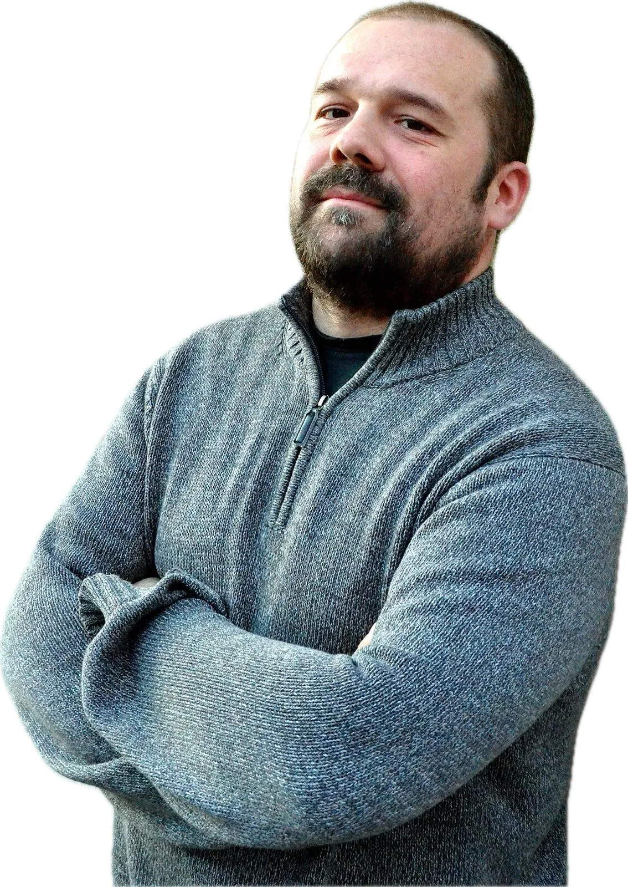

SuperModerno is a media company and consultancy committed to making technology understandable for everyone.
We think the technology shaping your world shouldn't be a mystery, so we do something about it. We make that happen through YouTube, Instagram and TikTok explaining, questioning and sparking curiosity. We also get hands-on with organizations ready to experiment and build.
What we do.
Media & Communication
We create content, narratives and formats that make complex technologies easy to follow and fun to watch, without dumbing them down.
Innovation & Prototyping
We help organizations explore new technologies, spot opportunities and turn loose ideas into directions, experiments and prototypes.
Why SuperModerno?
The name draws on the optimism of 1960s Italy, when industry sparked innovation and design took the world stage. Every technology was once supermodern: born from ambition, failure, experimentation and a particular idea of the future.
Founder
SuperModerno was founded by Massimo Banzi — interaction designer, educator, creative technologist and angel investor. He's also the co-founder of Arduino, the little computer that let millions of people build with technology without needing to be experts.

Wanna work together?
Send us an email at hello@supermoderno.com